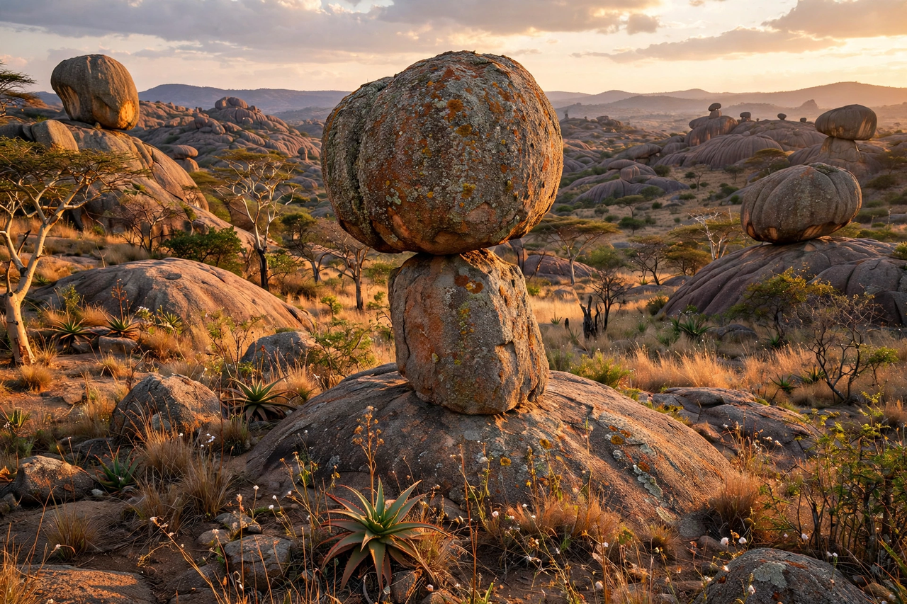

Matobo Hills
From Wikipedia, the free encyclopedia

The Matobo Hills are an area of granite kopjes and wooded valleys in southern Zimbabwe, south of Bulawayo, of immense spiritual significance to the Shona and Ndebele peoples and famous for one of Africa's densest concentrations of rock art. The Matobo National Park (established 1926, among Africa's oldest) protects black and white rhinos and the world's densest breeding population of black eagles; the hills are a UNESCO World Heritage Site (2003).
Sacred landscape
For centuries the hills have housed the Mwari (Mlimo) oracle shrines, to which kings and supplicants — including, in 1896, negotiators ending the first Chimurenga war — made pilgrimage; Cecil Rhodes chose burial at the summit he named World's View, beside the Shangani Patrol dead, a grave that remains contested in Zimbabwean memory. San hunter-gatherers painted the granite shelters for at least 13,000 years — giraffes, rhinos, hunters and trance imagery among the finest rock art on the continent.
Conservation
The park's intensive protection zone sustains a flagship rhino population guarded against poaching; the cultural landscape listing recognises the hills' living religious significance alongside their archaeology — a combination UNESCO calls a cultural landscape of outstanding universal value.